1970s
겨울여자(1977)
청소년 관람불가
드라마 | 1시간 56분
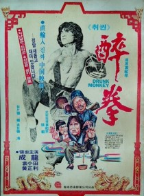
취권(1978)
12세 이상 관람가
액션/코미디 | 1시간 51분
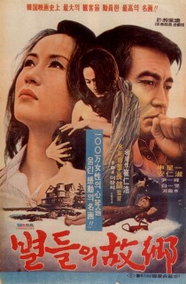
별들의 고향(1974)
청소년 관람불가
드라마 | 1시간 49분
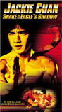
사형도수(1978)
12세 이상 관람가
액션/코미디 | 1시간 38분
내가 버린 여자(1978)
청소년 관람불가
드라마 | 1시간 47분
1980s
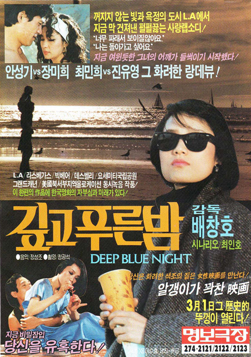
깊고 푸른 밤(1985)
청소년 관람불가
드라마 | 1시간 50분
킬링필드(1984)
청소년 관람불가
전쟁/드라마 | 2시간 22분
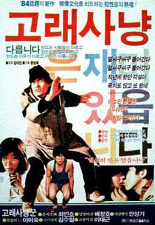
고래사냥(1984)
12세 이상 관람가
드라마 | 1시간 52분
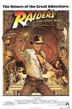
레이더스(1981)
12세 이상 관람가
모험/액션 | 1시간 55분
매춘(1988)
청소년 관람불가
성인 | 1시간 36분
1990s
쉬리(1999)
15세 이상 관람가
액션/스릴러 | 2시간 5분
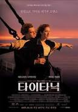
타이타닉(1997)
15세 이상 관람가
로맨스/드라마 | 3시간 15분
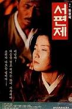
서편제(1993)
15세 이상 관람가
뮤지컬/드라마 | 1시간 53분
사랑과 영혼(1990)
15세 이상 관람가
로맨스/판타지 | 2시간 9분
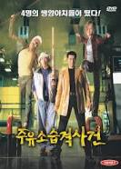
주유소 습격 사건(1999)
청소년 관람불가
코미디/액션 | 2시간
2000s
왕의남자(2005)
15세 이상 관람가
드라마/스릴러 | 1시간 59분
멀홀랜드 드라이브(2001)
청소년 관람불가
스릴러/미스터리 | 2시간 27분
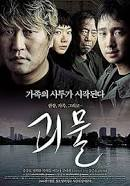
괴물(2006))
12세 이상 관람가
공포/코미디 | 2시간 1분
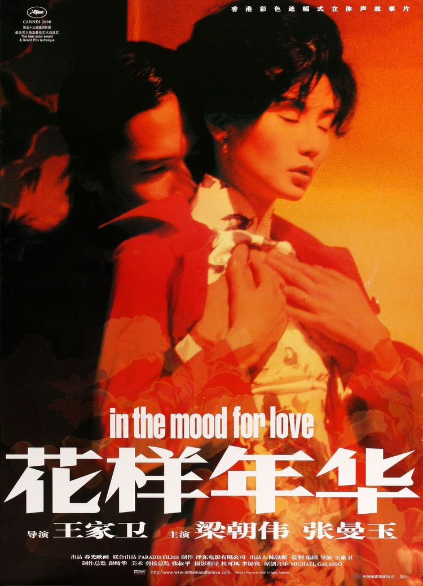
화양연화(2000)
15세 이상 관람가
드라마/로맨스 | 1시간 38분
태극기 휘날리며(2004)
15세 이상 관람가
전쟁/드라마 | 2시간 28분